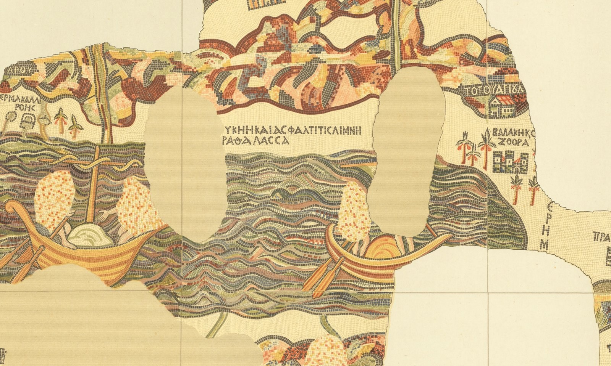

Josué 13 — La Traducción Mister

El mosaico del siglo VI que reproduce este detalle se encontró bajo el suelo de una iglesia en Madaba —la propia Medeba de este capítulo (v9), el primer pueblo nombrado en la frontera de Rubén. El lago mismo, rotulado aquí «el lago salado y asfáltico», es el propio Mar Salado de este capítulo (v27); el pueblo amurallado y rodeado de palmeras en la orilla lejana es Zoar, justo al sur del tramo de meseta que este capítulo entrega a Rubén. Un mapa hallado en el mismo distrito que representa, hecho unos diecisiete siglos después de que las propias ciudades de Rubén se asentaran por primera vez como una lista en vez de una imagen.

⚠ La revisión de 2013 reduce en silencio la cantidad del v1, y es el tipo de cambio fácil de pasar por alto. La KJV y la ASV leen las dos, en inglés, ‘there remaineth yet very much land to be possessed’; la NWT 1984 conserva la misma fuerza, ‘to a very great extent the land yet remains to be taken in possession’. Su propia revisión de 2013 la suaviza a ‘much of the land remains to be taken in possession’ —dejando caer el superlativo «muy gran medida» por un «mucha» más llano. Tanto la TNM 1987 como su propia revisión de 2019 conservan intacta en este caso la fuerza del estante español, «todavía queda gran parte de la tierra» y «todavía queda mucha tierra» respectivamente —así que el suavizado aparece solo en el lado inglés de las dos ediciones de esta misma versión.
★★★ «Queda todavía muchísima tierra por poseer» aterriza un capítulo después de que este libro dijera lo contrario. Josué 11:23 (ya en estas páginas) cerró el relato de la guerra con «la tierra tuvo reposo de la guerra» —y la propia nota de cierre de Josué 12 ya señaló que Jueces dedicaría un libro entero a convertir ese reposo en un contrato de arriendo que no deja de vencer. Este capítulo no espera a Jueces: en su propia primera frase, Jehová le dice a un Josué ya viejo que la tierra todavía sin conquistar no es una limpieza final sino muchísima —la región montañosa del Líbano, toda la costa filistea, pueblos que este libro nunca sitiará. Reposo de la GUERRA y posesión de la TIERRA no son la misma afirmación, y este capítulo es el primero en decirlo en voz alta.
★★ La orden de repartir tierra sin conquistar usa el mismo verbo que la Biblia usa para echar una suerte. Hapfilehá, «hazla caer» (v6), es el hifil de nafal, caer —y no es una metáfora suelta: Ester 3:7 usa el verbo idéntico para que Amán literalmente eche el Pur, «hizo caer el Pur, es decir, la suerte», y Nehemías 11:1 lo usa para los propios residentes de Jerusalén que echan suertes para poblar la ciudad. Jehová le dice a Josué que haga caer tierra que Israel no posee como herencia —el lenguaje de echar suertes de Josué 14 y lo que sigue (todavía no en estas páginas), ya corriendo bajo una orden dada antes de que se eche una sola suerte real, sobre terreno donde ningún pie israelita ha puesto aún el pie.
★ Los avitas están en esta lista de «lo que queda», y Deuteronomio ya dijo que habían desaparecido. Deuteronomio 2:23 (ya en estas páginas) afirma, sin matices, que «los caftoreos, que salieron de Caftor, destruyeron» a los avitas y se asentaron en su lugar —un desplazamiento completo, reportado como un hecho del pasado. Este versículo (v3) los enumera de todos modos, décadas después, entre los pueblos cuya tierra Israel todavía no ha tomado. Las lecturas difieren sobre si un resto sobrevivió después de todo a la conquista caftorea, si este es un segundo enclave que el versículo anterior nunca pretendió cubrir, o si los dos avisos simplemente vienen de dos hilos distintos de memoria sobre el mismo pueblo desaparecido; esta traducción declara los dos versículos y no los armoniza.
★ «Todas las regiones de los filisteos» (v2) comparte raíz con un nombre que este libro ya usó para otra cosa. Gelilot, «regiones, distritos», se construye sobre galil, la misma raíz que da nombre a «Galilea» (ha-Galil) —la misma familia de palabras que la propia nota de cierre de Josué 12 (ya en estas páginas) acaba de señalar en la variante griega «Galilea» para el rey de Goim. Nada vincula los «distritos» de Filistea con el distrito del norte más allá de una raíz compartida para una franja de país —pero es la segunda vez en dos capítulos que el vocabulario de listas de tierra de este libro roza ese nombre.
La tierra al norte de Filistea es Fenicia aunque no se la nombre así —Sidón, Biblos, la cordillera del Líbano—, y el capítulo reutiliza la propia geografía de guerra de este libro para marcar su borde. «Baal-gad al pie del monte Hermón» (v5) es el mismo límite norte que Josué 11:17 y 12:7 (ambos ya en estas páginas) dieron a toda la conquista, extendido aquí una frase más, hasta Lebo-hamat —el horizonte más septentrional que este proyecto nombró por primera vez, y para el que eligió una lectura, hace tres libros, en Números 13. Véase la nota de aquel capítulo, y la entrada de Hamat, para saber por qué esta traducción conserva aquí el nombre de lugar en vez de la más común «entrada de Hamat».
★★★ «La frontera de los guesuritas y los maacateos» se cita aquí exactamente como se prometió —la tercera y última vez. La propia nota de Josué 12 (ya en estas páginas) ya contó la frase en dos versículos y nombró este como el tercero: Deuteronomio 3:14 (ya en estas páginas), donde la conquista de Jair llega primero a ella; Josué 12:5, que la copia sin cambios; y este versículo (v11), que la copia una tercera vez, todavía sin cambios. Tres usos, una frase, y en los tres los dos pueblos que nombra están en el lado EQUIVOCADO de una frontera que nunca se cruza de verdad contra ellos.
★★★ Y el v13 dice sin rodeos lo que la frase fronteriza solo implicaba: Israel nunca atacó a estos dos pueblos en absoluto. Las propias notas de cierre de Josué 12 (ya en estas páginas) construyeron todo un tema recurrente a partir de reyes heridos pero ciudades nunca realmente tomadas —Jerusalén, Gezer, Taanac, Meguido, cada una confirmada sin conquistar por Jueces 1. Este versículo es el caso más difícil: los guesuritas y maacateos nunca estuvieron siquiera en una lista de reyes para ser heridos. «Guesur y Maacat han morado en medio de Israel hasta el día de hoy» —la fórmula idéntica que Jueces usará de los jebuseos en Jerusalén— describe una conquista que nunca siquiera empezó, nombrada justo en el capítulo que se supone termina de repartir la tierra.
⚠ El verbo del v13 divide el estante entre una expulsión fallida y una negativa llana a intentarlo. La NWT 1984 lee, en inglés, ‘did not dispossess’; la ASV lee ‘drove not out’; la KJV lee ‘expelled not’, un fracaso ligeramente más activo; la NWT 2013 lee ‘did not drive out’. Sobre dónde terminan los dos pueblos, la KJV es la única que los nombra dos veces por completo —‘the Geshurites and the Maachathites dwell among the Israelites’—; la ASV abrevia el segundo par a los nombres desnudos, ‘Geshur and Maacath dwell in the midst of Israel’; la TNM 1987 hace lo mismo en español, «Guesur y Maacat siguen morando en medio de Israel».
★★★ El v14 es el pago que este proyecto viene cargando desde Números 18, y aterriza dos veces en este mismo capítulo. «Jehová es su herencia» es una fórmula que la propia entrada de diccionario de najalá de este proyecto viene siguiendo desde Números 18:20 (ya en estas páginas), donde se le dice solo a Aarón, y se amplía a toda la tribu en Deuteronomio 18:1-2 (ya en estas páginas). Las dos son promesas. Este versículo, y el v33 al cierre del capítulo, son la promesa REALMENTE CUMPLIDA: la tierra se está repartiendo, versículo por versículo, distrito por distrito, y Leví es la única tribu sin una línea en el documento —«las ofrendas de Jehová… hechas por fuego, son su herencia», los mismos dos sustantivos, jélek y najalá, que se le quitaron a Aarón y se le devolvieron transformados, ahora escritos en el registro real de tierras y no solo hablados como consuelo.
★ Og sigue siendo «el resto de los refaítas», y este libro sigue repitiendo el título en vez de la historia. Miyyéter ha-Refaim (v12) es la frase idéntica que Deuteronomio 3:11 y Josué 12:4 (ambos ya en estas páginas) ya usaron del mismo rey —un capítulo de recapitulación que recapitula hasta sus propias recapitulaciones, la derrota de Sejón y Og contada una tercera vez en seis versículos sin ningún detalle nuevo.
★★★ Un grupo de los propios pueblos de Rubén reaparece, por nombre, en los oráculos posteriores de los profetas contra Moab —porque Moab los recuperó. Este capítulo le da a Rubén Medeba (v9), Bet-baal-meón, Jahaza, Quiriataim, Sibma, y Bet-jesimot (vv17–20); las elegías de Isaías y Jeremías por Moab nombran a cada uno otra vez, siglos después, llorado o arrasado (Isaías 15–16; Jeremías 48, ninguno todavía en estas páginas) —véase cada entrada para su propia cita. Un capítulo sobre Israel recibiendo esta meseta es, leído junto a los profetas, también el capítulo inicial de una historia sobre Israel perdiéndola.
★ Cademot nombra el terreno donde Israel estaba parado antes de ganar siquiera esta meseta. «El desierto de Cademot» es donde está Moisés cuando envía por primera vez mensajeros de paz a Sejón (Deuteronomio 2:26, ya en estas páginas) —así que el pueblo que este capítulo reparte a Rubén (v18) es el propio campamento de la guerra, ahora simplemente una línea del documento.
★★ El v21 llama «príncipes de Sejón» a cinco hombres que Números 31 llamó «reyes de Madián» —los mismos cinco nombres idénticos, bajo dos títulos distintos. Nesiqué Sejón, «los príncipes» o «jefes» de Sejón, son Eví, Réquem, Zur, Hur y Reba —los mismos cinco nombres exactos que Números 31:8 (ya en estas páginas) llama «los reyes de Madián», malqué Midyán, muertos en una campaña completamente distinta. Las lecturas difieren sobre qué reconcilia los dos: que estos cinco gobernaron Madián como reyes independientes Y TAMBIÉN sirvieron como vasallos de Sejón, que un título es la realidad política más temprana y el otro una posterior, o que los dos avisos simplemente conservan dos tradiciones separadas sobre los mismos cinco hombres sin fijar su estatus exacto. Esta traducción declara los dos títulos y no resuelve cuál, si alguno, es el más original.
★★★ Y la cláusula siguiente es la muerte que este proyecto viene prometiendo desde los hombres que la pagaron junto con él. Números 31:8, en su propia nota de cierre, nombró este versículo por número de antemano: a Balaam «mataron a espada», y este versículo (v22) repite las mismas tres palabras de manera independiente, décadas después, en un libro completamente distinto —«el adivino… mataron los hijos de Israel a espada, junto con los demás que mataron.» Ha-qosem, «el adivino», es el título profesional que la propia entrada de diccionario de qésem de este proyecto viene siguiendo desde la paga que los mensajeros de Balac llevaban en las manos —la última palabra de la Biblia sobre Balaam es también la más plana: ningún oráculo, ninguna negativa, ningún ángel, solo un título y un verbo.
★★ «La frontera de Lidbir» es el mismo rompecabezas gramatical que Josué 12 acaba de plantear sobre otro nombre —y el estante lo resuelve al revés. La propia nota de Josué 12 sobre «Lasarón» (ya en estas páginas) encontró que cada testigo del estante lee una lámed prefijada como fundida en un nombre propio. Aquí el hebreo tiene la construcción idéntica —li-Dvir, literalmente «a Debir»—, y cada versión que este proyecto ha buscado para este capítulo (ASV, KJV, las dos ediciones de la NWT, las dos ediciones de la TNM) separa la preposición y lee «la frontera de Debir», tratándolo como el nombre ordinario de un segundo pueblo, en el norte, en vez de un nombre de lugar fundido «Lidbir». Esta traducción sigue esa lectura unánime. ⚠ Casi con certeza NO es el mismo Debir que Josué 10 y 12:13 (ambos ya en estas páginas) ya situaron en la montaña del sur, cerca de Hebrón —dos pueblos que comparten una sola palabra hebrea ordinaria («santuario, oráculo») como nombre, la misma precaución que las propias entradas de Tapúa y Hefer de este capítulo ya llevan adelante desde Josué 12. Los dos se mantienen separados en vez de enlazarse a una sola entrada.
★ Y este Galaad del norte tiene su propio Lo-debar, una grafía distinta para lo que puede ser el mismo vecindario. 2 Samuel 9:4 y 17:27 (ninguno todavía en estas páginas) sitúan un pueblo llamado Lo-debar —«sin pasto»— cerca de Mahanaim, hogar de un segundo hombre llamado Maquir (hijo de Amiel, sin relación con el Maquir hijo de Manasés de este capítulo), en el distrito exacto que describe este versículo. Las consonantes son parecidas pero no idénticas —li-Dvir contra Lo Debar—, y esta traducción declara la posible conexión sin adoptarla.
★ Mahanaim deja de ser un momento en la historia de Jacob y se convierte en una línea del mapa. «Dos campamentos» es donde Jacob se encontró con los ángeles de Dios justo antes de luchar en el Jaboc (Génesis 32:2-3, ya en estas páginas); aquí es simplemente la esquina donde se encuentran la frontera de Gad (v26) y la de la media tribu de Manasés (v30) —la misma geografía, generaciones después, leída primero como teofanía y ahora como catastro.
★ La lista del valle se cierra en un tramo de tierra nombrado por leopardos y por agua que algún día se secarán los dos. Bet-nimra (v27) comparte casi con certeza raíz con «las aguas de Nimrim», que Isaías y Jeremías dicen los dos que se secarán cuando Moab caiga (Isaías 15:6; Jeremías 48:34, ninguno todavía en estas páginas) —el mismo valle que este capítulo le da a Gad como tierra fértil de pasto, llorado como un páramo en el mismo aliento profético que las propias ciudades perdidas de Rubén, tres notas más arriba.
⚠ La unidad que el estante usa para el recuento del v30 separa lo antiguo de lo nuevo, la misma costura que este proyecto ya ha encontrado en otros lugares. La KJV y la ASV conservan las dos, en inglés, la palabra de recuento antigua, ‘threescore cities’; la NWT 1984 la moderniza a ‘sixty towns’, y su propia revisión de 2013 conserva el mismo número pero lo escribe como cifra, ‘60 towns’. La TNM 1987 y su revisión de 2019 hacen el mismo movimiento en español, «sesenta pueblos» las dos veces, así que el estante español no muestra aquí la costura generacional que sí muestra el inglés.
★★★ «Sesenta ciudades» (v30) no es nuevo en este capítulo, y tampoco es la última palabra sobre el número. La frase idéntica, «sesenta ciudades», está en tres versículos de la Biblia hebrea: Deuteronomio 3:4 (ya en estas páginas), donde cuenta primero «todo el territorio de Argob, el reino de Og en Basán» antes de que tenga adjunto el nombre de ninguna tribu; este versículo, que acredita ahora las mismas sesenta a las propias aldeas de Jair dentro de ese reino; y 1 Crónicas 2:23 (todavía no en estas páginas), que usa el MISMO número para las MISMAS aldeas pero añade que «Guesur y Aram les quitaron Havot-jair… sesenta ciudades», siglos después —el número sobrevive a una conquista, un reparto de tierra y una pérdida sin cambiar. Jueces 10:4 (todavía no en estas páginas), en cambio, cuenta treinta ciudades para un Jair mucho más tardío y explícitamente distinto, ya señalado como un hombre diferente por la propia entrada de Jair de este proyecto; y 1 Crónicas 2:22, dos versículos antes del sesenta, da un CUARTO número para lo que se lee como el mismo clan —el Jair de Segub con «veintitrés ciudades». Las lecturas difieren sobre si esto traza un solo territorio que se reduce, varios recuentos sin relación atados a un nombre por la tradición, o un desliz textual que esta traducción no puede resolver solo con la evidencia; lo cierto es que Deuteronomio, Josué y 1 Crónicas coinciden los tres en las MISMAS sesenta donde Crónicas no coincide ni consigo misma, a cuatro versículos de distancia.
★ Y el v31 le entrega a la MISMA media tribu su tierra dos veces, nombrando a Maquir y no a Jair para los pueblos de Basán que Jair acaba de renombrar. El v30 atribuye «todas las aldeas de Jair» a la frontera de Manasés; el v31 enumera de nuevo, de inmediato, a Astarot y Edrei, dentro de ese mismo Basán, como pertenecientes a «los hijos de Maquir» —el propio clan del padre de Jair, por el modismo genealógico amplio que la propia entrada de Jair de este proyecto ya señaló en Números 32:41 (ya en estas páginas). El documento nombra al conquistador una vez y al clan por el que conquistó una segunda, en versículos consecutivos, para el mismo terreno.
★★★ El v33 cierra todo el reparto de la tierra con la frase idéntica con la que el v14 lo abrió —y esta es la segunda mitad del pago que este proyecto viene siguiendo desde Números 18. «Jehová, el Dios de Israel, es su herencia» (v33) repite casi palabra por palabra la propia fórmula del v14, dicha ahora de Leví una segunda vez y en tercera persona en vez de en segunda —la ampliación exacta que Deuteronomio 10:9 (ya en estas páginas) ya realizó de Aarón a toda la tribu. Dos menciones de la misma excepción, una al comienzo del documento y otra a su cierre, es la propia manera de este capítulo de asegurarse de que la omisión no se pueda leer como un descuido: a Leví se le salta a propósito, dos veces, en el único capítulo construido enteramente sobre quién recibe qué.
Ecos pagados. La promesa de Josué 12 de que «la frontera de los guesuritas y los maacateos» se citaría una tercera vez se paga en el v11. La promesa de Números 18:20 y Deuteronomio 18:1-2 de que la falta de tierra de Leví se «cumpliría de verdad» en este libro se paga en los vv14 y 33, dos veces. La propia nota de cierre de Números 31:8 sobre la muerte de Balaam se paga en el v22, en las mismas tres palabras, «a espada». Las Sibma, Baal-meón y Bet-nimra sin enlazar de Números 32:38 reciben aquí sus primeras entradas de enciclopedia, su reconstrucción por fin emparejada con un reparto de tierra. Y la Save-quiriataim de Génesis 14:5, herida en vida de Abram, se confirma todavía en el mapa, y ahora rubenita, en el v19.
Ecos plantados. Josué 14 (todavía no en estas páginas) es donde el echar suertes que el propio «hazla caer» de este capítulo (v6) ya prometió, finalmente sucede de verdad, al occidente del Jordán. Jueces 10:3-4 (todavía no en estas páginas) contará treinta ciudades para un Jair completamente distinto, contra las sesenta de este capítulo. Jueces 11 (todavía no en estas páginas) manda a Jefté a casa, a un Mizpa en este mismo Galaad que el propio Ramat-mizpé de este capítulo puede o no ser. Y Isaías 15–16 y Jeremías 48 (ninguno todavía en estas páginas) son donde casi cada pueblo que este capítulo le da a Rubén reaparece, perdido.
Decisiones. Los números de versículo hebreo y español coinciden en todo el capítulo, sin desplazamiento de numeración en la costura de este libro —comprobado directamente, no supuesto a partir de un recuento que coincide. «Jehová» continúa la convención fija de este proyecto para el tetragrámaton; najalá es «herencia» en todo el capítulo, igual que en Números 18 y Deuteronomio 10 y 18. En el v5 esta traducción imprime el nombre de lugar Lebo-hamat en vez de la más común «entrada de Hamat», siguiendo la decisión razonada ya tomada en Números 13 en vez del valor por defecto no examinado que el propio Números 34:8 de este proyecto (ya en estas páginas) deja en pie —véase la entrada de Hamat para la inconsistencia que este capítulo no hereda en silencio. En el v26 esta traducción lee «la frontera de Debir», separando la lámed prefijada en vez de fundirla en un nombre de lugar «Lidbir», sobre la evidencia unánime de cada testigo del estante consultado para este capítulo —la resolución opuesta a «el Sarón» de Josué 12, donde este proyecto conservó la región y dejó que el estante fundiera el nombre. El texto masorético marca una petujá después de los vv14, 23 y 32, y una setumá después de los vv28 y 33 —reproducidas tal como las marca la fuente. El título de Balaam, ha-qosem, es «el adivino», igual que la propia entrada de qésem de este proyecto; nesikim en el v21 es «príncipes», mantenido distinto de los melajim, «reyes», que Números 31 usó de los mismos cinco nombres, ya que las dos palabras hebreas son genuinamente distintas y la nota declara el enigma en vez de armonizarlo en silencio.
Biblioteca. Veintidós entradas nuevas de enciclopedia en los dos idiomas: los pueblos guesuritas y maacateos (de Transjordania); los lugares Mahanaim, Edrei, Jahaza, Cademot, Mefaat, Quiriataim, Sibma, Zéret-sahar, Bet-jesimot, Ramat-mizpé, Betonim, Bet-haram, Bet-nimra, Zafón, Medeba, Bet-baal-meón, Hamat, el Sihor, Gebal, y Misrefot-maim. Cuatro entradas existentes de enciclopedia ampliadas, cada una en los dos idiomas: Jair y Astarot (sus propias citas anticipadas a este capítulo convertidas en enlaces vivos), la entrada de diccionario de najalá (su propia cita anticipada a los vv14 y 33 de este capítulo cumplida), y la entrada de Balaam (su muerte prometida, ahora enlazada). Sin entradas nuevas para los pueblos fronterizos guesuritas o maacateos de Salca, ni para las ciudades sin nombre propio de Galaad, igual que Deuteronomio 3 y Números 32 ya dejaron sin enlazar nombres desnudos de este tipo.
⚠ Una nota sobre el orden: Josué está en estas páginas en los capítulos 1–13. Josué 14–24 sigue siendo la secuencia abierta; el siguiente de este libro es Josué 14, donde la suerte que el propio «hazla caer» de este capítulo ya prometió finalmente se echa, al occidente del Jordán, y Caleb da un paso adelante para reclamar la única herencia de todo este libro que el azar no decide.